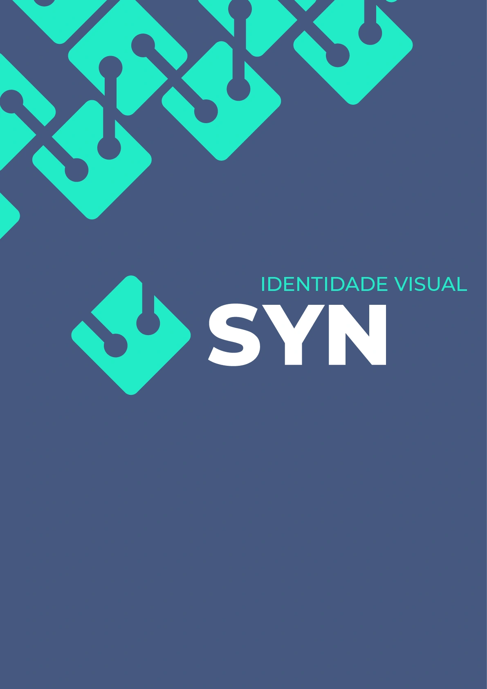
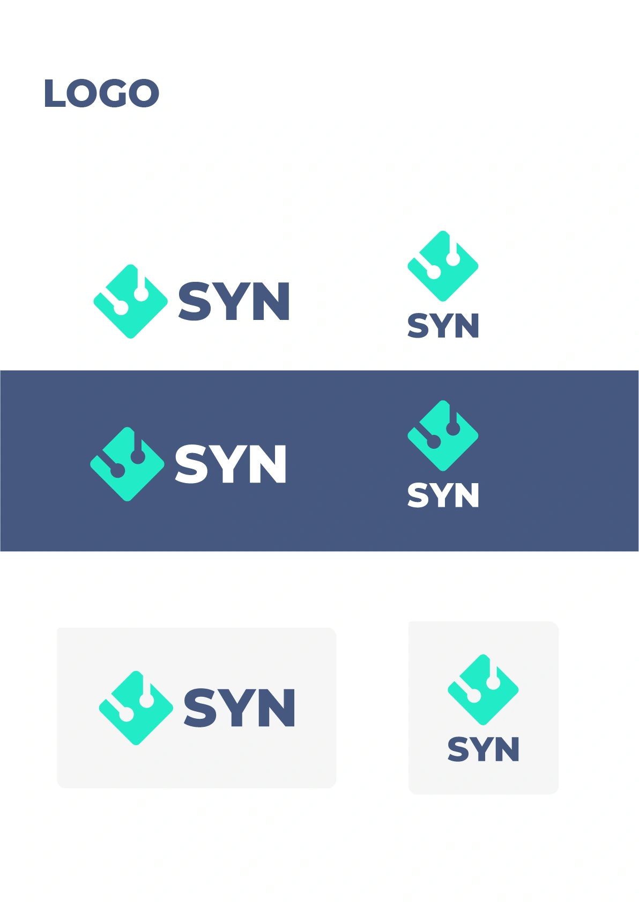
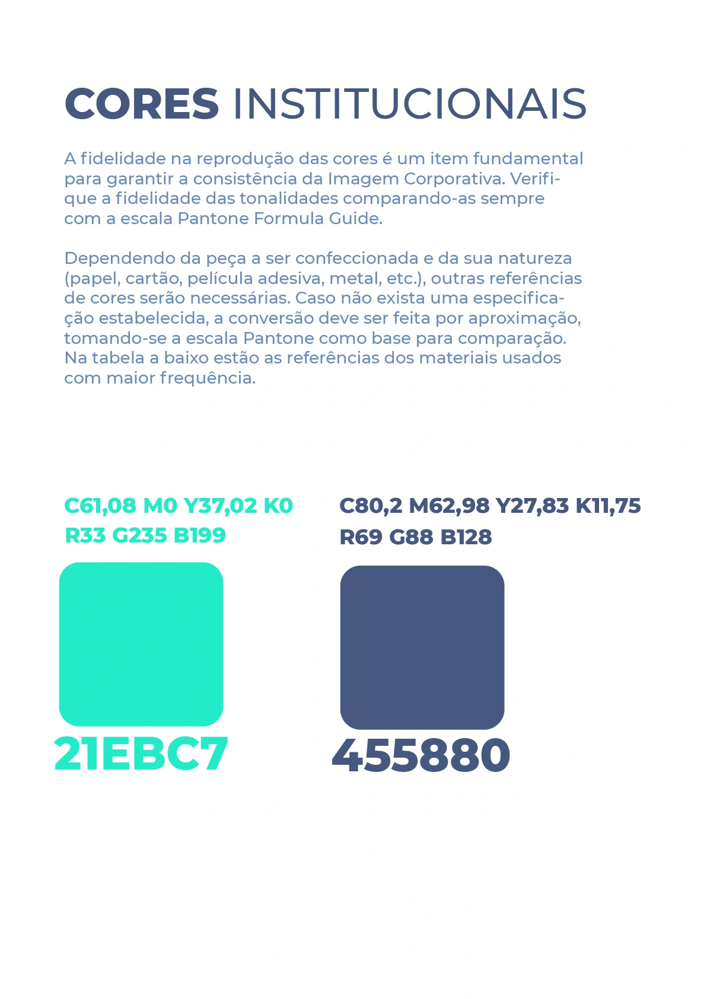
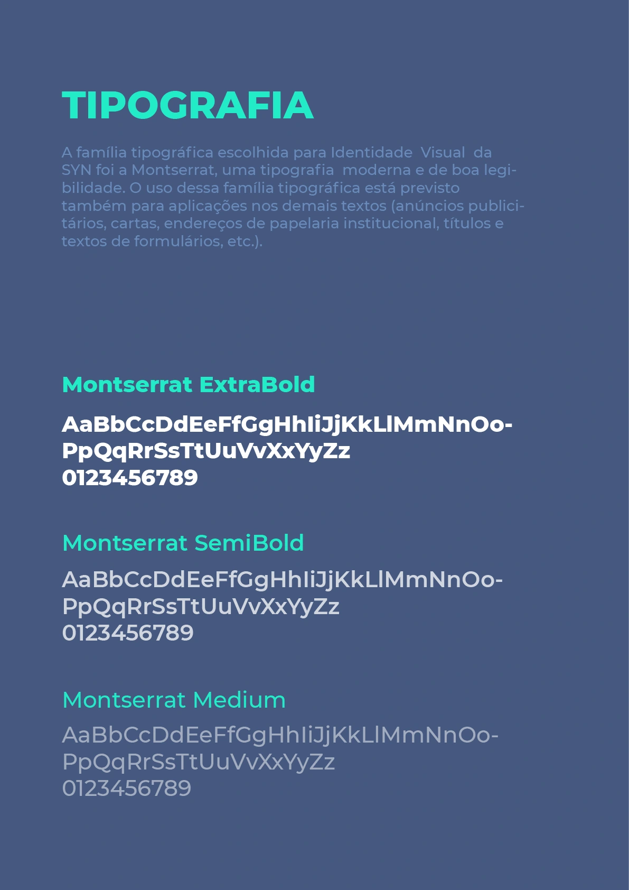
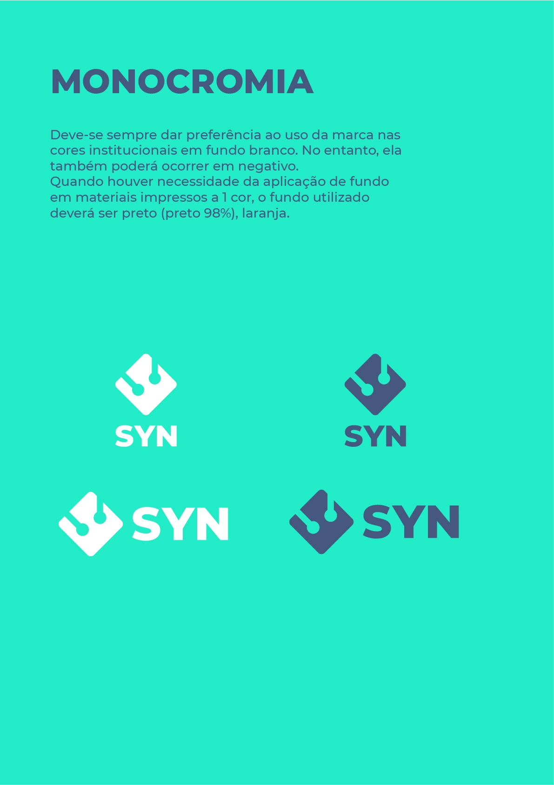
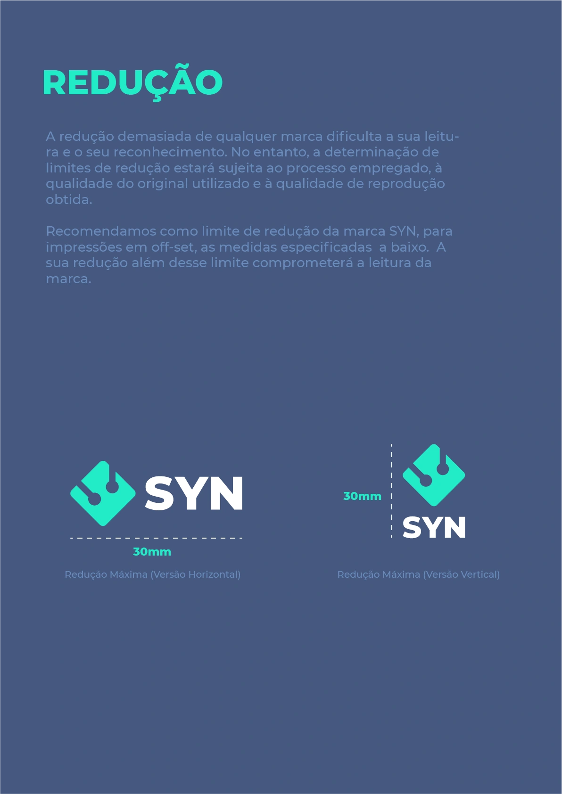
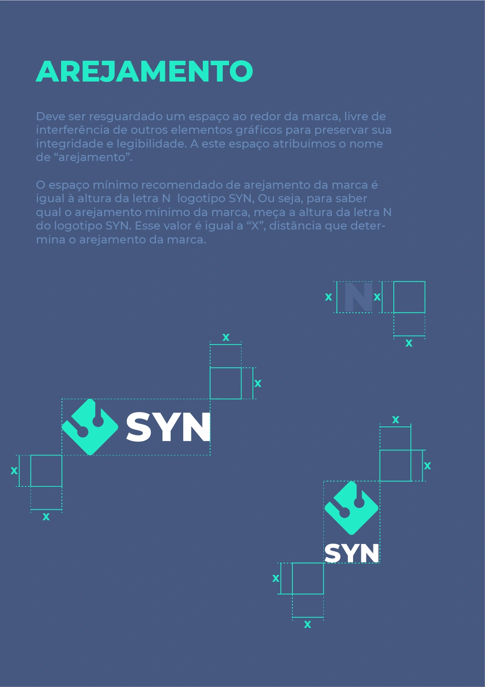

Identidade que
conecta.
Uma identidade visual completa para a SYN Saúde. Símbolo, assinatura, cores e tipografia formam um sistema documentado no manual da marca e desdobrado em cartões, crachá e uniformes.

O padrão do símbolo dá continuidade à assinatura.
Um símbolo.
Duas formas de assinar.
O símbolo parte de uma forma geométrica inclinada, com cantos arredondados e dois recortes que terminam em círculos. Ao lado do nome ou acima dele, a mesma construção organiza as versões horizontal e vertical da assinatura.
Repetido e distribuído pela composição, o símbolo também funciona como padrão gráfico. Esse recurso conecta a capa do manual aos cartões e às demais aplicações da identidade.

Símbolo, assinatura e padrão na abertura do projeto.

Composições horizontal e vertical em diferentes fundos.
Uma paleta própria.
Uma linguagem consistente.
O verde-turquesa e o azul estruturam a identidade. A prancha de cores reúne as referências de reprodução, enquanto as aplicações alternam fundos claros e escuros e versões da assinatura em branco.
A família Montserrat compõe o sistema tipográfico. O manual apresenta os pesos ExtraBold, SemiBold e Medium, estabelecendo variações para títulos, informações e textos de apoio.
TURQUESA#21EBC7

Referências cromáticas reunidas no manual.

Montserrat nos pesos ExtraBold, SemiBold e Medium.
Coerência em
cada aplicação.
O manual reúne versões em uma cor, exemplos de redução e diagramas de área de proteção. As pranchas mostram como a assinatura mantém sua estrutura em diferentes tamanhos, fundos e relações com outros elementos.
As versões horizontal e vertical compartilham os mesmos elementos. A escolha entre elas acompanha a proporção e o espaço disponível em cada peça.

Versões em uma cor e em negativo.

Exemplos de escala para as duas assinaturas.

Diagramas de respiro ao redor da marca.
Da apresentação
ao vestuário.
Nos cartões, o padrão geométrico acompanha o nome e as informações de contato. No estudo de crachá, a identidade organiza frente e verso com áreas de cor, assinatura e campos de identificação.
Os mockups de vestuário exploram diferentes escalas do símbolo: ampliado na lateral da camiseta e compacto no peito da camisa social e da polo. Azul, branco e verde-turquesa mantêm a continuidade entre os materiais.